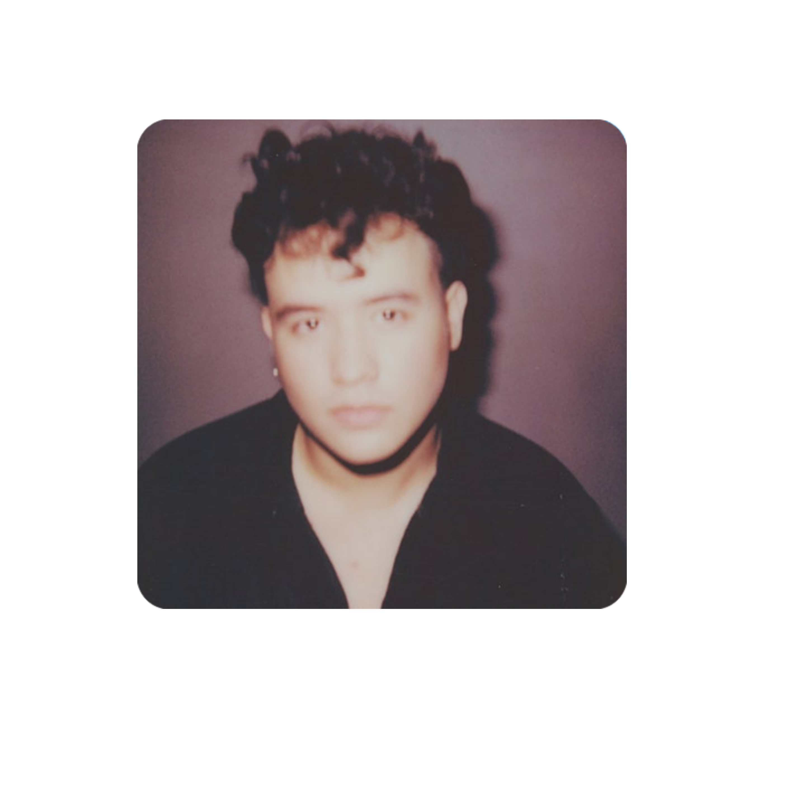
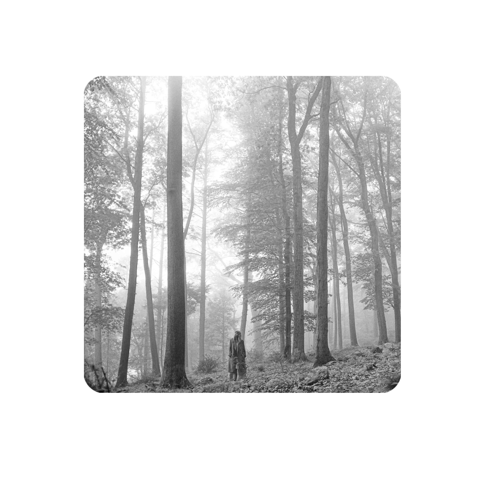
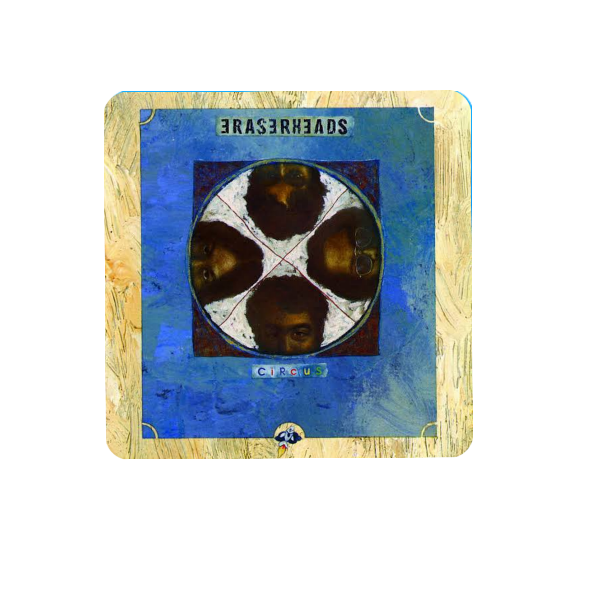
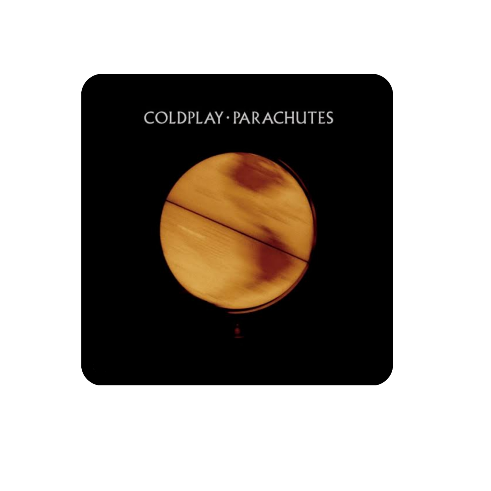

Little me will be happy experiencing new things because the future her is currently creating a website, and the cool thing is that it's all about her website. I still remember back when I was in grade 3, I used to cry because I couldn't understand the computer science subject. I really struggled with it, and now I just laugh at that, thinking about how much time flies so fast, from learning about Microsoft Word to HTML and CSS in high school. Hello imnida madlang pepol! I'm Trisha Lynn G. Francisco, a student and a scholar from Philippines Science High School - Caraga Region Campus. I live in Bilay, Butuan City, Agusan Del Norte. Since I live far away from the campus, I'm currently staying in the school's dormitory. Furthermore, I've always had a passion for writing feature articles, and fun fact about me: I've been a feature writer since elementary, and I'm currently part of the school publication since the 7th grade. I find true joy in writing. My favorite colors are pink and purple, which I've loved since I was in kindergarten. Also, I'm the eldest daughter of Trestan A. Francisco and Emilyn G. Francisco. I have only one sibling, my brother named Ted Lester G. Francisco; we have an 8-year age gap. I'm born on March 10, 2009, I'm a Pisces. My journey has led me to appreciate the beauty of sunsets, the moon, the sky, and stars. I love how mesmerizing they look; it's a comforting view for me. One of my life goals is to achieve my dreams and graduate with flying colors. I'm also the breadwinner of the family, so I need to strive hard. In my spare time, you can often find me using my phone, scrolling through TikTok, and chatting with my friends, especially my intercampus friends. Additionally, I believe in the power of connection and look forward to sharing experiences, stories, and insights with others who share my passions and interests. Please don't hesitate to reach out and start a conversation with me because I'm an approachable person :))
These are my top 5 favorite songs; I love these songs so much, especially because each song holds a special meaning for me, and I could truly sing these songs all day. Also, they are a mix of love and sad songs, which I can relate to since I'm in love but at the same time, I'm heartbroken (charot).
    Do you want to know what's happening in my life? Here are my social media profiles; feel free to follow me if you'd like. If you're curious about my life at Pisay, you can subscribe to my channel! Additionally, I'm an approachable person and would love to get to know you and be friends, so if you'd like to have a friend, just slide into my DMs on Facebook. And if you have something to tell me but are scared, you can send me an anonymous message to my NGL. Lastly, I reply to messages, guys, and I'd love to be your friend imnida ror